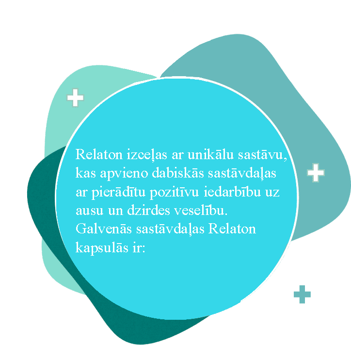

Vai Jūs satraucaties par savu dzirdi?
Dzirdes problēmas ir izplatītas ne tikai starp vecāka gadagājuma cilvēkiem; arvien vairāk cilvēku jebkurā vecumā saskaras ar šīm problēmām. Sekas var būt nopietnas — no galvassāpēm līdz kaitinošai zvana skaņai ausīs un pat nespējai skaidri dzirdēt skaņas.

- Melatonīns: Palīdz atjaunot dzirdes šūnas, veicina veselīgu miegu, kas ir būtisks organisma atjaunošanai.
- Ginkgo biloba ekstrakts: Uzlabo asinsriti ausīs, kas var veicināt dabisko dzirdes atjaunošanos.
- Vīnogu ekstrakts: Darbojas kā spēcīgs antioksidants, aizsargājot dzirdes šūnas no oksidatīviem bojājumiem.
- B6 vitamīns: Atbalsta nervu sistēmas, tostarp dzirdes nerva, veselību.
- Cinks: Veicina vispārēju organisma imunitāti un dzirdes šūnu veselību.
Kam ieteicams Relaton?
Relaton ir ieteicams cilvēkiem, kuri:
Relaton lietošana var sniegt vairākus ieguvumus ausu veselībai un dzirdes uzlabošanai.
Dzirdes asuma palielināšana:
Relaton veicina dzirdes šūnu atjaunošanos, kas var rezultēties labākā skaņu uztverē.
Trokšņa ausīs samazināšana:
Uzlabojot asinsriti ausīs un nodrošinot pretiekaisuma iedarbību, troksnis ausīs var kļūt mazāk traucējošs.
Galvassāpju un ausu iekaisumu mazināšana:
Relaton dabiskās sastāvdaļas palīdz mazināt iekaisumus, kas var atvieglot sāpju simptomus.
Vispārējā labsajūtas uzlabošana:
Atbalstot ausu veselību, Relaton arī uzlabo dzīves kvalitāti, it īpaši vecāka gadagājuma cilvēkiem.